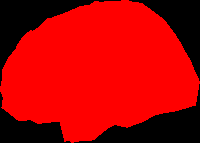
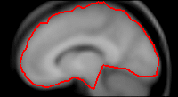
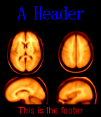

#!/usr/local/bin/perl5 -w
use ILT::LayoutInclude;
use ILT::LayoutUtils;
$layout = new_grid ILT::ImageLayout ( 1, 1 );
$surface = new ILT::GeometricObject ( "Data/surf2.obj" );
$view = new_canonical ILT::View ( Left_view );
$image_info = new ILT::ImageInfo ( $surface, $view );
$layout->image_info( 0, $image_info );
$layout->generate_image( "ILT_tutorial_example_output/example1.gif", 200, 0 );
GeometricObject
#!/usr/local/bin/perl5 -w
use ILT::LayoutInclude;
use ILT::LayoutUtils;
$layout = new_grid ILT::ImageLayout ( 1, 1 );
$plane_object = new_canonical ILT::PlaneObject ( Sagittal_axis, -10 );
$view = new_canonical ILT::View ( Left_view );
$volume_object = new ILT::VolumeObject ( "Data/volume1.mnc" );
$scene_object =
new_volume_colouring ILT::ColourObject (
new ILT::IntersectionObject ( $plane_object,
$volume_object ),
$volume_object, Hot_metal_scale, 50, 150 );
$image_info = new ILT::ImageInfo ( $scene_object, $view );
$layout->image_info( 0, $image_info );
$layout->generate_image( "ILT_tutorial_example_output/example2.gif", 200, 0 );

#!/usr/local/bin/perl5 -w
use ILT::LayoutInclude;
use ILT::LayoutUtils;
$layout = new_grid ILT::ImageLayout ( 1, 1 );
$plane_object = new_canonical ILT::PlaneObject ( Sagittal_axis, -10 );
$view = new_canonical ILT::View ( Left_view );
$volume_object = new ILT::VolumeObject ( "Data/volume1.mnc" );
$surface_object = new ILT::GeometricObject ( "Data/surf2.obj" );
$cross = new ILT::IntersectionObject ( $plane_object, $surface_object );
$slice = new_volume_colouring ILT::ColourObject (
new ILT::IntersectionObject ( $plane_object,
$volume_object ),
$volume_object, Gray_scale, 50, 150 );
$scene_object = new ILT::UnionObject ( $cross, $slice );
$image_info = new ILT::ImageInfo ( $scene_object, $view );
$layout->image_info( 0, $image_info );
$layout->generate_image( "ILT_tutorial_example_output/example3.gif", 200, 0 );
#!/usr/local/bin/perl5 -w
use ILT::LayoutInclude;
use ILT::LayoutUtils;
$layout = new_grid ILT::ImageLayout ( 1, 1 );
$plane_object = ILT::PlaneObject->new_canonical( Sagittal_axis, -10 );
$view = ILT::View->new_canonical( Left_view );
$mri_volume = ILT::VolumeObject->new( "Data/volume1.mnc" );
$pet_volume = ILT::VolumeObject->new(
"/avgbrain/brain/images/mni_demo_fdg_normal_pet_tal.mnc.gz" );
$slice_object = ILT::IntersectionObject->new( $plane_object,
$mri_volume ),
$coloured_mri = ILT::ColourObject->new_volume_colouring( $slice_object,
$mri_volume, Gray_scale, 50, 150 );
$scene_object = ILT::ColourObject->new_volume_colouring( $coloured_mri,
$pet_volume, Spectral_scale,
400, 500 );
$scene_object->under_colour( "transparent" );
$scene_object->opacity( .5 );
$image_info = new ILT::ImageInfo ( $scene_object, $view );
$layout->image_info( 0, $image_info );
$layout->generate_image( "ILT_tutorial_example_output/example4.gif", 200, 0 );

#!/usr/local/bin/perl5 -w
use ILT::LayoutInclude;
use ILT::LayoutUtils;
$layout = new_grid ILT::ImageLayout ( 2, 2 );
#--------------------------------- image 0 0
$plane_object = new_canonical ILT::PlaneObject ( Sagittal_axis, -10 );
$view = new_canonical ILT::View ( Left_view );
$volume_object = new ILT::VolumeObject ( "Data/volume1.mnc" );
$scene_object =
new_volume_colouring ILT::ColourObject (
new ILT::IntersectionObject ( $plane_object,
$volume_object ),
$volume_object, Hot_metal_scale, 50, 150 );
$image_info = new ILT::ImageInfo ( $scene_object, $view );
$layout->image_info( $layout->row_col_to_index(0,0), $image_info );
#--------------------------------- image 0 1
$plane_object = new_canonical ILT::PlaneObject ( Sagittal_axis, -40 );
$view = new_canonical ILT::View ( Left_view );
$volume_object = new ILT::VolumeObject ( "Data/volume1.mnc" );
$scene_object =
new_volume_colouring ILT::ColourObject (
new ILT::IntersectionObject ( $plane_object,
$volume_object ),
$volume_object, Hot_metal_scale, 50, 150 );
$image_info = new ILT::ImageInfo ( $scene_object, $view );
$layout->image_info( $layout->row_col_to_index(0,1), $image_info );
#--------------------------------- image 1 0
$plane_object = new_canonical ILT::PlaneObject ( Transverse_axis, 10 );
$view = new_canonical ILT::View ( Top_view );
$volume_object = new ILT::VolumeObject ( "Data/volume1.mnc" );
$scene_object =
new_volume_colouring ILT::ColourObject (
new ILT::IntersectionObject ( $plane_object,
$volume_object ),
$volume_object, Hot_metal_scale, 50, 150 );
$image_info = new ILT::ImageInfo ( $scene_object, $view );
$layout->image_info( $layout->row_col_to_index(1,0), $image_info );
#--------------------------------- image 1 1
$plane_object = new_canonical ILT::PlaneObject ( Transverse_axis, 40 );
$view = new_canonical ILT::View ( Top_view );
$volume_object = new ILT::VolumeObject ( "Data/volume1.mnc" );
$scene_object =
new_volume_colouring ILT::ColourObject (
new ILT::IntersectionObject ( $plane_object,
$volume_object ),
$volume_object, Hot_metal_scale, 50, 150 );
$image_info = new ILT::ImageInfo ( $scene_object, $view );
$layout->image_info( $layout->row_col_to_index(1,1), $image_info );
#--------------- create the header
$text_object = ILT::TextObject->new( "A Header", .5, .5 );
$text_object->colour( "blue" );
$text_object->horizontal_alignment( Align_centre );
$text_object->vertical_alignment( Align_centre );
$text_object->font( "12x24" );
$layout->header( $text_object );
#--------------- create the footer
$text_object = ILT::TextObject->new( "This is the footer", .5, .5 );
$text_object->colour( "red" );
$text_object->horizontal_alignment( Align_centre );
$text_object->vertical_alignment( Align_centre );
$layout->footer( $text_object );
#--------------- render the images
$layout->generate_image( "ILT_tutorial_example_output/example5.gif", 200, 0 );
new_grid ILT::ImageLayout ( $n_rows, $n_cols )Creates a layout grid of $n_rows by $n_cols images.
image_info( $image_index, $image_info_object )With the optional second argument, sets the ImageInfo object for the given $image_index. Without the second argument, returns the current value. The value of $image_index can range from 0 to $n_rows * $n_cols - 1. For convenience, the computation of the image index is performed by:
row_col_to_index( $row, $col )Returns an image_index, based on the $row, $col, and the grid size of the ImageLayout.
horizontal_white_space( $n_pixels )When called with an argument, sets the number of desired number of empty pixels horizontally between images. With or without an argument, returns the current value. Defaults to 0.
vertical_white_space( $n_pixels )When called with an argument, sets the number of desired number of empty pixels vertically between images. With or without an argument, returns the current value. Defaults to 0.
white_space_colour( $colour_string )When called with an argument, sets the colour of background pixels images. With or without an argument, returns the current value. Defaults to "black".
generate_image( $filename, $x_size, $y_size )Creates an final image, by rendering each of the sub-images and assembling them into an image of size $x_size by $y_size. If the aspect does not match, then either horizonal or vertical white space is added. If either $x_size or $y_size is 0, then an appropriate value will be used to match the aspect perfectly, with no extra white space. The filename must end in an extension which identifies the desired image type, for instance, .rgb, .gif, or .tif.
new ILT::ImageInfo( $scene_object, $view )Creates an ImageInfo object which has a reference to a scene_object and a view. The ImageInfo object contains all the information needed to render an image of the scene.
scene_object( $scene_object )When called with an argument, sets the scene_object for the ImageInfo object. With or without an argument, returns the current value.
scene_view( $view_object )When called with an argument, sets the view for the ImageInfo object. With or without an argument, returns the current value.
background_colour( $colour_string )When called with an argument, sets the background colour for the ImageInfo object. With or without an argument, returns the current value. If the background colour is not set, the value of "black" is used.
new_canonical ILT::View( $predefined_view ) new_arbitrary ILT::View( $xv, $yv, $zv, $x_up, $y_up, $z_up )These are two alternate methods to create a ViewObject. The first form takes one of the following predefined view names, Left_view, Right_view, Top_view, Bottom_view, Back_view, or Front_view. The second form takes the line of sight vector and the up vector defining the orientation of the view. The up direction need not be orthogonal to the line of sight, but must not be colinear with it.
copy ()Makes a copy of the view.
view_direction( $xv, $yv, $zv )Without any arguments, returns an array defining the current view direction. With three arguments, sets the view direction.
up_direction( $xu, $yu, $zu )Without any arguments, returns an array defining the current up direction. With three arguments, sets the view direction.
new ILT::GeometricObject( $filename )Creates a SceneObject that is a geometric object stored in a file specified by $filename.
ILT::GeometricObject::filename( $filename )With the optional argument, sets the filename associated with the object. With or without the argument, returns the current filename. Normally, this method would not be needed, as the new() method is usually sufficient.
new ILT::PlaneObject( $xn, $yn, $zn, $xo, $yo, $zo ) new_canonical ILT::PlaneObject( $axis, $origin )These are two alternate methods to create an infinite plane object. The first specifies a normal and point on the plane. The second takes one of the three defined orientations, Sagittal_axis, Coronal_axis, or Transverse_axis, and a position of the plane along this axis, to define a plane perpendicular to one of the three canonical axes. A plane cannot be rendered itself, but is useful for intersecting with other objects.
ILT::PlaneObject::plane_normal( $xn, $yn, $zx ) ILT::PlaneObject::plane_origin( $xo, $yo, $zo )Sets or gets the plane normal and origin, respectively, of the plane object. Normally not need, as these are specified upon creation.
new ILT::VolumeObject( $filename, $interpolation )Creates a volume object, by specifying a MINC filename, and an optional interpolation method, which is one of Nearest_neighbour_interpolation, Linear_interpolation, or Cubic_interpolation. If not specified, it defaults to Linear_interpolation.
ILT::VolumeObject::filename( $filename ) ILT::VolumeObject::interpolation( $interpolation )Routines to set or get the parameters of the VolumeObject. Normally not needed, as these are specified upon creation.
new ILT::ColourObject( $sub_object, $volume_object, $method,
$low_limit, $high_limit )
Creates a ColourObject, which assigns colours to geometry based on a
volume and a lookup method. The object coloured is $sub_object, and
the $volume_object must be of type VolumeObject. The $method is one
of
Gray_scale ,
Hot_metal_scale ,
Spectral_scale ,
Red_scale ,
Green_scale ,
Blue_scale ,
Over_colour_scale , or
Usercc_scale . The low and high limit define the mapping of
colours to value. If the type is Over_colour_scale , the
colour map ranges from black through to the colour set by the
over_colour() method. If the type is Usercc_scale , the
usercc_filename() method must be called to define a file with the
piecewise linear encoding of a colour map. Note that it is valid to
have a low limit higher than the high limit.
ILT::ColourObject::sub_object( $sub_object ) ILT::ColourObject::volume( $volume_object ) ILT::ColourObject::method( $method ) ILT::ColourObject::low_limit( $low_limit ) ILT::ColourObject::high_limit( $high_limit )Routines to set or get the parameters of the ColourObject. Normally not needed, as these are specified upon creation.
ILT::ColourObject::over_colour( $over_colour ) ILT::ColourObject::under_colour( $under_colour )Sets or gets the values of the over and under colours of the object.
ILT::ColourObject::opacity( $opacity )Sets or gets the opacity of this volume, controlling how much the colour of the geometry show through the colour assigned by the volume. A value of 1, fully opaque, uses exactly the colour computed from the volume, whereas a value of 0, ignores the colour computed from the volume.
new ILT::IntersectionObject( $sub_object1, $sub_object2 )Creates an intersection of two objects. At present, one of the objects must be a plane.
ILT::IntersectionObject::sub_object( $index, $sub_object )Sets or gets the two sub-objects of the IntersectionObject. Normally not needed, as these are specified upon creation. $index must be either 0 or 1.
new ILT::UnionObject( $sub_object1, $sub_object2, ... )Creates an object which is the union of 2 or more SceneObjects.
ILT::UnionObject::n_sub_object()Returns the number of sub-objects in the union.
ILT::UnionObject::sub_object( $index, $sub_object )Sets or gets the sub-objects of the UnionObject. Normally not needed, as these are specified upon creation.
new ILT::RenderObject( $sub_object )Creates a render object which modifies the appearance of its sub-object.
ILT::RenderObject::sub_object( $sub_object )Sets or gets the sub-object of the RenderObject. Normally not needed, as this is specified upon creation.
ILT::RenderObject::line_width( $line_width )Sets or gets the value of the line_width parameter, which controls the line widths of the sub-object.
ILT::RenderObject::surface_shading( $shading_method )Sets or gets the value of the shading method, which controls how surfaces appear when rendered. Values are Flat_shading or Smooth_shading, the default.
ILT::RenderObject::lighting_state( $lighting_state )Sets or gets the value of the lighting-state parameter, which controls whether the sub-object is rendered with lighting or not.
new ILT::TransformObject( $sub_object, $transform_filename )Creates an object which is the transform of the sub-object, where the transform is a ".xfm" file specified by $transform_filename.
ILT::TransformObject::sub_object( $sub_object )Sets or gets the sub-object of the TransformObject. Normally not needed, as this is specified upon creation.
ILT::TransformObject::transform( $transform_filename )Sets or gets the transform filename of the TransformObject. Normally not needed, as this is specified upon creation.
new ILT::TextObject( $string, $x_pos, $y_pos [,$font] )Creates a text object positioned at ($x_pos, $y_pos) in viewport coordinates (between 0 and 1). The font is any X font valid to be passed to Image Magick's convert.
ILT::TextObject::string( $text_string )Sets or gets the value of the text string to be displayed.
ILT::TextObject::viewport_position( $x_pos, $y_pos )Sets or gets the viewport position of the text.
ILT::TextObject::font( @pos )Sets or gets the font for the text object.
ILT::TextObject::colour( @pos )Sets or gets the display colour for the text object.
ILT::TextObject::horizontal_alignment( @pos ) ILT::TextObject::vertical_alignment( @pos )Sets or gets the alignment of the text. Valid values for horizontal are Align_left, Align_centre, and Align_right. Valid values for vertical are Align_bottom, Align_centre, and Align_top.